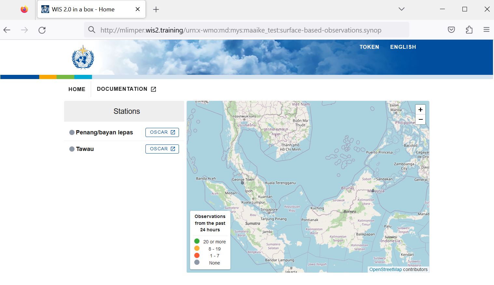

Configuring station metadata
Learning outcomes
By the end of this practical session, you will be able to:
- create an authorization token for the
collections/stationsendpoint - add station metadata to wis2box
- review stations associated to datasets in the wis2box-ui
- update/delete station metadata using the wis2box-webapp
Introduction
wis2box has a collection of station metadata that is used to publish data on WIS2. Only data for stations configured in the wis2box station list will be published on your wis2box broker. The WIGOS Station Identifier (WSI) is used as the unique reference of the station which produced a specific set of observation data.
Create an authorization token for collections/stations
To edit stations via the wis2box-webapp you will first to need create an authorization token.
Login to your student VM and ensure you are in the wis2box-1.0b5 directory:
cd ~/wis2box-1.0b5
Then login into the wis2box-management container with the following command:
python3 wis2box-ctl.py login
Within the wis2box-management container your can create an authorization token for a specific endpoint using the command: wis2box auth add-token --path <my-endpoint>.
For example, to use a random automatically generated token for the collections/stations endpoint:
wis2box auth add-token --path collections/stations
The output will look like this:
Continue with token: 7ca20386a131f0de384e6ffa288eb1ae385364b3694e47e3b451598c82e899d1 [y/N]? y
Token successfully created
Or, if you want to define your own token for the collections/stations endpoint, you can use the following example:
wis2box auth add-token --path collections/stations DataIsMagic
Output:
Continue with token: DataIsMagic [y/N]? y
Token successfully created
Exercise 1: Create an authorization token for collections/stations
Please create an authorization token for the collections/stations endpoint using the instructions above.
add station metadata using the wis2box-webapp
The wis2box-webapp provides a graphical user interface to edit station metadata.
Open the wis2box-webapp in your browser by navigating to http://<your-host>/wis2box-webapp:

And select stations:

When you click add 'add new station' you are asked to provide the WIGOS station identifier for the station you want to add:

When you click search the station data is retrieved from OSCAR/Surface, please note that this can take a few seconds.
Review the data returned by OSCAR/Surface and add missing data where required. Select a topic for the station and provide your authorization token for the collections/stations endpoint and click 'save':


Go back to the station list and you will see the station you added:

Exercise 2: Add station metadata
Please add three or more stations to the wis2box station metadata collection of your wis2box.
Please use stations from your country if possible, especially if you brought your own data.
Otherwise, you can use the following WIGOS station identifiers for testing purposes:
- 0-20000-0-91334
- 0-20000-0-96323 (note missing station elevation in OSCAR)
- 0-20000-0-96749 (note missing station elevation in OSCAR)
Deriving missing elevation information
If your station elevation is missing, there are online services to help lookup the elevation using open elevation data. One such example is the Open Topo Data API.
For example, to get the elevation of the BMKG auditorium, one would query the Open Topo Data API as follows:
wget -q -O - "https://api.opentopodata.org/v1/aster30m?locations=-6.15558,106.84204"
Output:
{
"results": [
{
"dataset": "aster30m",
"elevation": 7.0,
"location": {
"lat": -6.15558,
"lng": 106.84204
}
}
],
"status": "OK"
}
Review your station metadata
After saving your station metadata, you can review the content of your station metadata in the wis2box-webapp:
You can verify the updated stations are available in the wis2box-api:

You can also visit the wis2box-ui at http://<your-host> and select "EXPLORE" on your dataset and you will see the stations you added:

Exercise 3: Review your station metadata
Verify the stations you added are associated to your dataset by visiting the wis2box-api and wis2box-ui endpoints for your host in your browser.
You also have the option to view/update/delete the station in the wis2box-webapp. Note that you are required to provide your authorization token for the collections/stations endpoint to update/delete the station.
Exercise 4: Update/delete station metadata
Please update/delete the station metadata for one of the stations you added using the wis2box-webapp.
Bulk station metadata upload
wis2box also has the ability to perform "bulk" loading of station metadata from a CSV file. See the official wis2box documentation for more information.
Conclusion
Congratulations!
In this practical session, you learned how to:
- create an authorization token for the
collections/stationsendpoint - add station metadata to wis2box
- review stations associated to datasets in the wis2box-ui
- update/delete station metadata using the wis2box-webapp